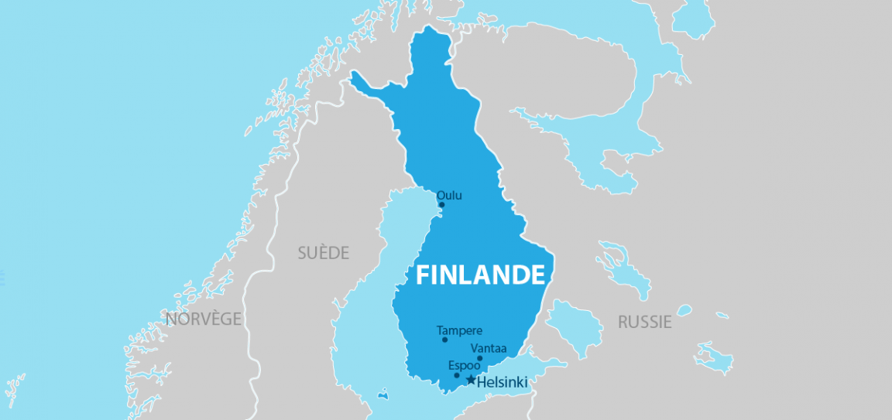
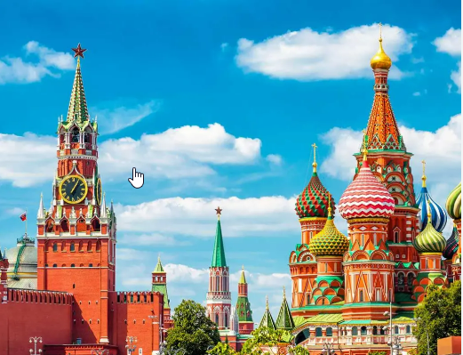
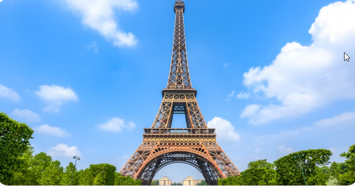
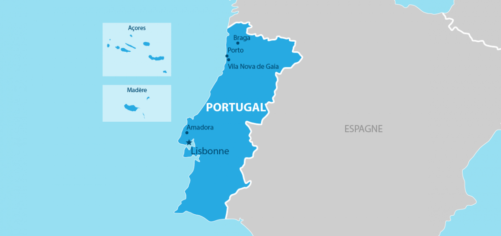

Retour
Tourisme dans le Monde
Découvrez les conditions de voyage pour certaines destinations populaires.
| Pays | Image | Conditions de Voyage |
|---|---|---|
| Finlande |  | Visa pour la Finlande (Schengen) La Finlande fait également partie de l'espace Schengen, et les conditions pour le visa touristique sont les mêmes que celles pour la France. Conditions : Voir les détails pour la France . |
| Russie |  | Visa pour la Russie La Russie exige un visa pour tous les ressortissants étrangers, à l'exception de ceux de certains pays bénéficiant d'accords spéciaux. Conditions générales pour un visa de tourisme : Durée : En général, jusqu'à 30 jours (peut être prolongé dans certaines conditions). Documents requis : Formulaire de demande de visa rempli et signé. Passeport valide (au moins 6 mois après la date de départ). Photos d'identité récentes. Invitation officielle d'une agence de voyage ou d'un hôtel russe agréé (l'original et la copie). Assurance voyage couvrant la Russie. Preuve de moyens financiers suffisants pour la durée du séjour. Réservation d'hôtel ou preuve de logement pendant le séjour. Frais : Environ 35 EUR à 100 EUR, en fonction de la durée du visa et du type de traitement (standard ou urgent). Procédure : Soumettre la demande à l'ambassade ou au consulat de Russie le plus proche. Il est conseillé de passer par une agence de voyages spécialisée dans l'obtention des visas russes en raison de la complexité de la procédure. |
| France |  | Visa pour la France (Schengen) La France fait partie de l'espace Schengen, ce qui signifie que, si vous obtenez un visa pour la France, vous pouvez également voyager dans d'autres pays Schengen (Italie, Portugal, Finlande, etc.). Conditions générales pour un visa de court séjour (Schengen) : Durée : Jusqu'à 90 jours sur une période de 180 jours. Documents requis : Formulaire de demande de visa rempli et signé. Passeport valide (au moins 3 mois après la date de départ prévu). Photos d'identité récentes. Preuve de la réservation de billet aller-retour. Assurance voyage couvrant la France et l'espace Schengen (min 30 000€). Justificatifs de moyens financiers suffisants (relevés bancaires, lettre d'invitation, etc.). Preuve d'hébergement (réservation d'hôtel, invitation, etc.). Si vous êtes en France plus de 5 jours, il est souvent exigé un justificatif de ressources financières ou de prise en charge. Frais : Environ 80 EUR pour un visa standard. Procédure : Vous devez soumettre votre demande à l'ambassade ou au consulat de France le plus proche, ou via un centre de demande de visa (VFS Global). |
| Chine | Visa L (Touristique) : nécessaire pour les ressortissants étrangers qui souhaitent visiter la Chine. Documents requis :. Passeport valide (6 mois après la date de départ).. Formulaire de demande et photos d'identité.. Réservation de billets d'avion et d'hôtels.. Preuve de moyens financiers.. Invitation si applicable.. Assurance voyage (si demandée).. Frais : Environ 60 EUR à 120 EUR selon le type de visa.. Délai de traitement : 4-7 jours ouvrables, demande recommandée 3 semaines avant le départ |
|
| Portugal |  | Visa pour le Portugal (Schengen) Le Portugal fait également partie de l'espace Schengen, et les conditions pour le visa touristique sont les mêmes que celles pour la France. Conditions : Voir les détails pour la France (ci-dessus). |
| Italie |  |
Visa pour l'Italie (Schengen) l'Italie fait également partie de l'espace Schengen, et les conditions pour le visa touristique sont les mêmes que celles pour la France. Conditions : Voir les détails pour la France (ci-dessus). |